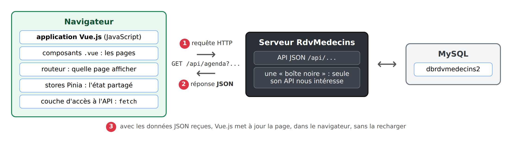
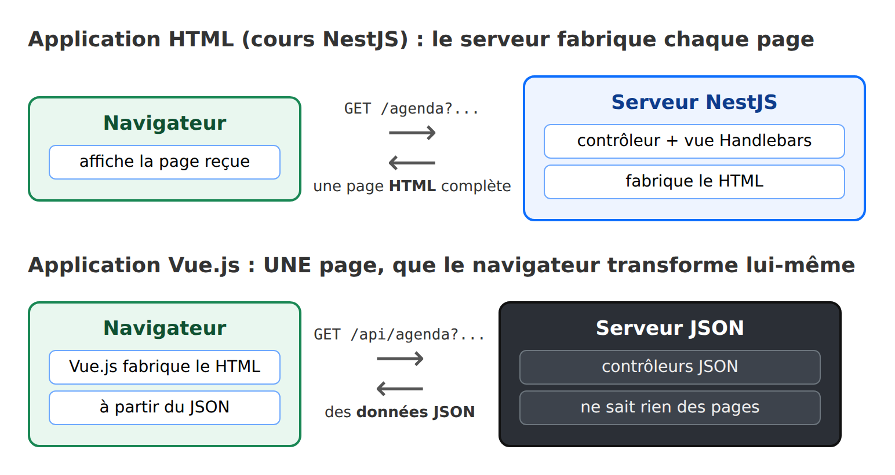
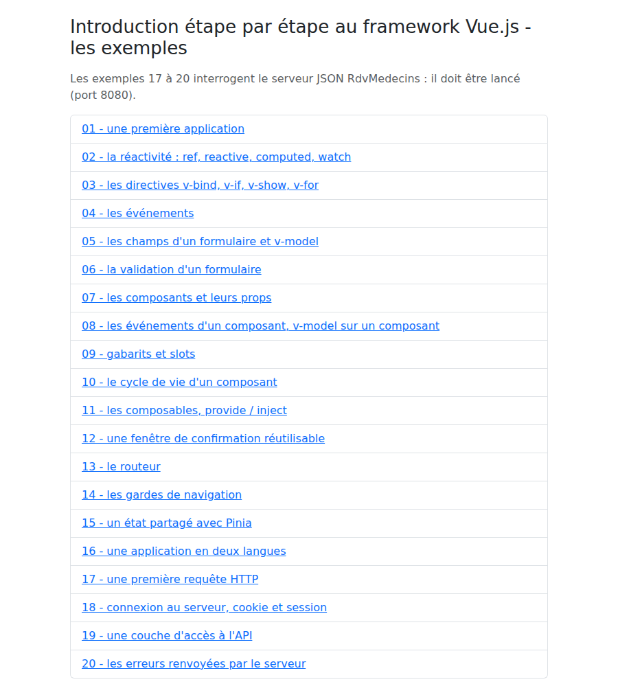

1. Introduction
The document’s PDF is HERE.
The document’s codes are HERE.
This document is a product of Anthropic’s IA Claude. It follows the course “Step-by-Step Introduction to the NestJS Web Framework,” from which it shifts the perspective:
- In the course [NestJS], the server generates the pages HTML (view engine [Handlebars]); the browser simply displays them;
- in this course, the pages are generated in the browser by an application [Vue.js]; the server, now reduced to a simple server JSON, provides only data.
The application’s pages, however, remain unchanged: they are those of the [RdvMedecins] application already presented with the other frameworks (login with CAPTCHA, doctor’s schedule, appointment window, patient portal, doctor and client management, account creation, French and English).
The document follows the same structure as its predecessors: first, numerous short examples, each focusing on a specific concept of [Vue.js], followed by a complete case study—the [Vue.js] client for the [RdvMedecins] application—with all files fully commented.
There are already two courses available on [Vue.js]: “Introduction to the VUE.JS Framework Through Examples” (2019), written for [Vue.js] 2, and “An Example of a Vue.js Client/Server / NestJS (2026), which covers both the server and the client. This document differs from those in its approach: the server is treated as a black box, with only the API and JSON of interest to us, and we learn [Vue.js] step by step before tackling the complete client.
1.1. The Role of Vue.js in a Web Application
The application has two parts, which communicate with each other only through HTTP requests:

- 1: The [Vue.js] application, running in the browser, sends a HTTP request to the server, for example, [GET /api/agenda?idMedecin=1&jour=2026-10-05];
- 2: The server responds with data JSON: this doctor’s schedule for that day. It does not generate any pages;
- 3: Using this data, [Vue.js] updates the page displayed in the browser without reloading it.
The following diagram compares the two architectures:

The browser loads only a single, nearly empty page—HTML—at startup. Everything else is generated by [JavaScript] code: this is known as a single-page application (SPA, for [Single Page Application]). When the user clicks on an internal link, no page is requested from the server: the [Vue.js] router changes the displayed URL and replaces the page’s content.
[Vue.js] is a [JavaScript] framework created in 2014 by Evan You. It is based on two ideas:
- components: the interface is broken down into reusable pieces (a navigation bar, a form field, a confirmation window, etc.), each written in a [.vue] file that combines its HTML, code, and style;
- responsiveness: a component’s data is “observed.” When any of it changes, [Vue.js] automatically updates the parts of the page that display it. We never write code that directly modifies the page.
We will use [Vue.js] 3, written in [TypeScript], with its most recent version: the API Composition and the [<script setup>] tag.
1.2. Tools Used
The examples were written and tested using the following tools (their installation is described in the appendix):
- [Node.js] 22 (or at least 20.19) and its package manager [npm];
- the [Visual Studio Code] editor, with the [Vue (Official)] extension;
- a recent browser ([Chrome], [Firefox], [Edge]), if possible with the extension [Vue.js devtools];
- the command-line tool [curl], which displays the raw HTTP responses;
- the SGBD [MySQL] (or [MariaDB]), for example, the one for [Laragon] under [Windows]: it is required for the JSON server, as described in the chapter introducing it.
The libraries are those for the [package.json] files: [Vue.js] 3.5, [Vite] 7 (the development and build tool), [vue-router] 4 (the router), [Pinia] 3 (shared state), [vue-i18n] 11 (languages), [TypeScript] 5.9, [Bootstrap] 5.3.
1.3. Examples
The codes in the document are organized into three folders:
The examples folder contains one subfolder per example:
All examples share the same libraries, which are declared in [exemples-vuejs/package.json]. They are installed once, in a console opened to the [exemples-vuejs] folder (in [VS Code]: Terminal menu / New Terminal):
Then launch the [Vite] development server:
A single server, on port 5173, serves all twenty examples. The address http://localhost:5173/ displays their summary:

You can navigate from one example to another by following the links (http://localhost:5173/01-premiere-application/, http://localhost:5173/02-reactivite/...). The [Vite] server does not need to be restarted: every file that is modified and saved is immediately recompiled, and the browser page updates automatically. You can stop it by entering [Ctrl-C] in the console.
Examples 17 through 20 query the JSON and [RdvMedecins] servers: you will need to have them installed and running, as explained in the chapter dedicated to them.
1.4. Document Contents
Chapter | Contents | Examples |
Getting Started | A Project: Speed, Responsiveness, Guidelines, Events, Forms, Validation | 01 to 06 |
Components | props, events, v-model, slots, lifecycle, composables, confirmation dialog | 07–12 |
Routing | the router, navigation guards | 13 and 14 |
Shared State | Pinia blinds | 15 |
Internationalization | An app in French and English | 16 |
The server: a black box | Installation of the JSON server, its API, curl examples | - |
Interacting with the server | fetch, connection, and cookies; the API access layer; server errors | 17–20 |
Case Study | The Vue.js client of the RdvMedecins application | - |
Deployment | The compiled client, served by the JSON server | - |
Each example is presented with its complete code, commented line by line, and a screenshot of its execution. The code itself is extensively commented: these comments are part of the course.